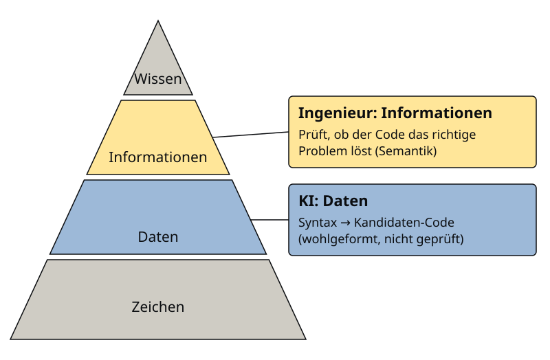

graph TD
table[table] --> tr[tr]
tr --> td1[td]
tr --> td2[td]
Wissenspyramide
The purpose of computing is insight, not numbers.
— Richard Hamming
Wissenspyramide
Die Wissenspyramide ist ein Modell zur Darstellung der Entstehung von Wissen. Sie ordnet vier Elementtypen (Zeichen, Daten, Informationen und Wissen) übereinander an und benennt die Schritte, die von einer Ebene zur nächsten führen. Zeichen bilden die Basis, Wissen die Spitze. Dazwischen liegen Syntax, Semantik und Verarbeitung als die Übergänge, die jeweils etwas hinzufügen.
Lernziel: Sie können die Ebenen der Wissenspyramide unterscheiden, typische Beispiele zuordnen und erklären, an welcher Stelle aus Zeichen Daten, Informationen und schließlich Wissen werden.

Zeichen
Zeichen formen die Basis der Pyramide. Sie sind die kleinsten Einheiten der schriftlichen Darstellung und können Buchstaben, Ziffern, Sonderzeichen oder Steuerzeichen sein.

Zeichen
Ein Zeichen codiert einen einzelnen Buchstaben, eine Ziffer, ein Sonderzeichen oder ein Steuerzeichen.
Welche Zeichen zur Verfügung stehen, legt ein Zeichensatz fest. Für die deutsche Sprache gehören dazu die Buchstaben a bis z in Groß- und Kleinschreibung, die Umlaute und das ß, die Ziffern 0 bis 9 sowie Satztrennungs- und Satzendzeichen wie Komma, Doppelpunkt, Punkt oder Fragezeichen.
Rechner können nur Zahlen speichern, deshalb wird jedem Zeichen eine Zahl zugeordnet. Der ASCII-Code tut das mit 7 Bit und umfasst damit 128 Zeichen; die Norm ISO 8859-1 erweitert ihn auf 8 Bit, also 256 darstellbare Zeichen, und enthält unter anderem die deutschen Umlaute.
Syntax
Eine Folge von Zeichen wird erst dann zu Daten, wenn sie bestimmten Regeln folgt. Diese Regeln nennt man Syntax. Sie legt fest, welche Zeichenfolgen als wohlgeformt gelten, sagt aber nichts darüber aus, ob das Ergebnis sinnvoll ist.

Syntax
Formale Regeln, die definieren, wie wohlgeformte Ausdrücke auf Basis eines Zeichensatzes gebildet werden.
Für die deutsche Grammatik lässt sich die Syntax vereinfacht so beschreiben: Ein Satz besteht aus mehreren Wörtern, die ihrerseits aus alphanumerischen Zeichen aus a-zA-Z0-9 gebildet werden. Zwei Wörter trennt ein Leerzeichen, und ein Wort darf mit einem Zeichen aus ,:;- enden, nur nicht am Satzende. Jeder Satz schließt mit einem Zeichen aus .!?.
Dasselbe Prinzip gilt für HTML-Dateien. Jede Zeile enthält eine beliebige Folge von ASCII-Zeichen und endet mit einem Zeilenvorschub (Code 10 unter Linux) oder mit Wagenrücklauf und Zeilenvorschub (Codes 13 und 10 unter Windows). Eine Zeile kann einen Tag enthalten, der mit < beginnt, den Elementnamen und gegebenenfalls Attribute nennt und mit > endet.
Daten
Sobald Zeichen den syntaktischen Regeln folgen, spricht man von Daten. Daten sind eine Vorform von Informationen: Sie sind formal korrekt aufgebaut und können gespeichert, übertragen und von Programmen gelesen werden, ohne dass jemand ihre Bedeutung kennen muss.

Daten
Eine wiederholt interpretierbare Darstellung von Information in formalisierter Art, geeignet zur Kommunikation, Interpretation oder Verarbeitung.
Der Satz „Ich Bahnhof nur verstehe.“ erfüllt die oben genannten Satzregeln, denn er besteht aus Wörtern, ist durch Leerzeichen getrennt und endet mit einem Punkt. Trotzdem ergibt er keinen Sinn. Das zeigt, dass Syntax allein nicht ausreicht.
Im HTML-Beispiel entstehen Daten, wenn eine Datei in einen Syntaxbaum überführt wird, das sogenannte Document Object Model (DOM). Der Baum bildet die Verschachtelung der Tags ab; die folgende Tabelle mit einer Zeile (<tr>) und zwei Zellen (<td>) wird zu einem Baum, in dem table die Wurzel, tr ihr Kind und beide td die Blätter sind.
<table width="300">
<tr height="50">
<td>Name</td>
<td>Birthday</td>
</tr>
</table>Semantik
Damit Daten verstanden werden, muss ihre Bedeutung bekannt sein. Die Semantik liefert diese Vorgaben für die Interpretation. Ein Satz muss also nicht nur korrekt gebaut sein, sondern seine Wörter müssen auch einer bekannten Bedeutung zugeordnet werden können.

Semantik
Vorgaben für die Interpretation von Daten.
Für die Alltagssprache übernimmt diese Aufgabe das Wörterbuch. Der Duden definiert „Bahnhof“ als den Gesamtkomplex einer Bahnstation mit Gleisanlagen und zugehörigen Gebäuden sowie als das Gebäude mit Halle, Schaltern, Wartesälen und Geschäften. Erst mit dieser Zuordnung lässt sich jedes Wort des Satzes einordnen.
Bei HTML liefert die Spezifikation die Bedeutung der Elemente: <table> steht für eine Tabelle, <tr> für eine Tabellenzeile und <td> für eine Tabellenzelle. Eine Referenz dazu bietet https://www.w3schools.com/html/. Die Semantik ist damit festgelegt, bevor ein konkretes Dokument verarbeitet wird.
Informationen
Wenn Daten mit Bedeutung versehen und für einen Zweck organisiert sind, entstehen Informationen. Anders als Daten beziehen sie sich auf ein bestimmtes Objekt, Ereignis oder einen Prozess und sind für jemanden nutzbar.

Informationen
Daten, die mit Sinn und Zweck versehen sind. Sie haben Bedeutung und sind für einen bestimmten Zweck organisiert. Informationen zum Beispiel sind eine Sammlung von Daten mit zugehörigen Erklärungen, Interpretationen und anderes Textmaterial, die ein bestimmtes Objekt, Ereignis oder einen bestimmten Prozess betreffen.
Der Satz „Ich verstehe nur Bahnhof.“ ist syntaktisch korrekt, und die Bedeutung jedes einzelnen Wortes. Für Menschen, die die Redewendung nicht kennen, bleibt er dennoch unverständlich, weil ihnen der Kontext fehlt. Informationen verlangen also mehr als Syntax und Wortbedeutungen; sie setzen den passenden Zusammenhang voraus.
Im HTML-Beispiel zeigt sich das an der Interpretation des Baums. Die Breite der Tabelle wird auf alle Zeilen vererbt, die Höhe einer Zeile auf alle ihre Zellen. Die Struktur aus dem vorigen Abschnitt wird dadurch um Eigenschaften ergänzt, die für die Darstellung relevant sind.
Verarbeitung
Informationen allein erzeugen noch kein Wissen. Sie müssen verknüpft, verglichen und bewertet werden, und diesen Schritt leistet die Verarbeitung. Dafür kommen Algorithmen, Erfahrungen, Werte und Fachkenntnisse zusammen.

Verarbeitung
Verknüpfung von Informationen durch Algorithmen, Erfahrungen, Werte und Fachkenntnisse.
Menschen verarbeiten über Erfahrung: Wer in Deutschland aufgewachsen ist, hat gelernt, dass „Ich verstehe nur Bahnhof.“ eine Redewendung ist und nicht von einem Bahnhof handelt. Diese Verknüpfung stammt aus gesammelten Erlebnissen und nicht aus der Grammatik.
Ein Webbrowser verarbeitet über einen Algorithmus. Er interpretiert die HTML-Tags und berechnet beispielsweise die Breite der Zellen. Da er weiß, dass die Zeile zwei Zellen enthält und die Tabelle 300 Pixel breit ist, setzt er jede Zelle auf 150 Pixel Breite und 50 Pixel Höhe, wie das ergänzte Baumdiagramm zeigt.
graph TD
table[table width=300] --> tr[tr width=300 height=50]
tr --> td1[td width=150 height=50]
tr --> td2[td width=150 height=50]
Wissen
Wissen steht an der Spitze der Pyramide. Es entsteht, wenn verarbeitete Informationen mit persönlicher Erfahrung verbunden werden, und setzt damit den erfolgreichen Durchlauf aller vorherigen Ebenen voraus: Syntax, Semantik und Verarbeitung müssen zusammenspielen.

Wissen
Die gesammelten, verknüpften Informationen über einen bestimmten Sachverhalt, integriert mit persönlichen Erfahrungen. Das Wissen weist eine wesentlich höhere Komplexität als die Information auf und ist eines der höchsten Güter einer Unternehmung. Mittels Wissen lassen sich Entscheidungen treffen und Aktionen einleiten.
Wer die Redewendung „Ich verstehe nur Bahnhof.“ kennt, weiß, dass der Sprecher nichts versteht oder nichts verstehen will, und kann entsprechend reagieren. Im HTML-Beispiel ist das Wissen die fertig gerenderte Tabelle, die ein Leser auf dem Bildschirm sieht und mit der er arbeiten kann.
| Name | Birthdate |
Wo steht die KI?
Die Pyramide hilft auch, die Rolle von KI-Assistenten beim Programmieren einzuordnen. Ein Sprachmodell erzeugt Code, der syntaktisch wohlgeformt ist; auf der Pyramide liegt das Ergebnis auf der Ebene der Daten. Ob dieser Code das gestellte Problem tatsächlich löst, ist eine Frage der Semantik und gehört damit zu den Informationen.

Diese Prüfung bleibt Aufgabe der Ingenieurin oder des Ingenieurs. Wer Code ungeprüft übernimmt, bleibt auf der Ebene der Daten stehen.
Hörsaalfragen: Hieroglyphen
Ein Beispiel aus einer ganz anderen Domäne macht die Ebenen greifbar. Dazu dienen ägyptische Hieroglyphen; für jede Ebene stellt sich die Frage, was im Bild dazugehört.

Jede einzelne Hieroglyphe ist ein Zeichen. Die Syntax ergibt sich aus der Anordnung: Die Zeichen stehen in Spalten und werden von oben nach unten und von rechts nach links gelesen. Die Semantik betrifft die Bedeutung der einzelnen Hieroglyphe, denn sie kann je nach Kontext als Bildzeichen, Lautzeichen oder Deutzeichen verwendet werden. Die Verarbeitung schließlich ist die Interpretation im Gesamtzusammenhang, weil sich die Darstellung nur im Kontext aller Hieroglyphen korrekt lesen lässt.
Anwendung auf Python
Die Begriffe Syntax und Semantik gelten nicht nur für natürliche Sprachen, sondern ebenso für Programmiersprachen. Ein Python-Programm ist zunächst eine Folge von Zeichen, die der Interpreter anhand der Syntax in eine Struktur überführt und dann gemäß der Semantik ausführt.
Syntax einer Programmiersprache
Formaler Regelsatz, der definiert, wie der Computer die Programmiersprache interpretieren soll. Die Syntax umfasst meist Regeln zur Definition von Befehlen (Wörter), Variablen (Werte) und Code-Blöcken (Sätze).
| Syntax-Beispiel | Bedeutung |
|---|---|
1234 |
Zahlenwert |
True / False |
Boolesche Werte |
"Text" |
Zeichenkette |
# Ignoriere |
Kommentar |
+ - / * |
Operatoren |
if True: |
Eine Bedingung wird immer mit einem Doppelpunkt abgeschlossen |
····print("Hello") |
Einrückung eines Code-Blocks: Alle Zeilen eines Blocks müssen gleich eingerückt sein |
Die Syntax legt fest, welche Zeichenfolgen ein gültiges Python-Programm bilden. Zahlen, Wahrheitswerte und Zeichenketten sind einfache Werte, die ihre feste Schreibweise haben; Kommentare und Operatoren folgen ebenfalls festen Regeln. Eine Besonderheit von Python ist, dass Code-Blöcke durch Einrückung gekennzeichnet werden: Alle Zeilen eines Blocks müssen gleich weit eingerückt sein, und eine if-Bedingung schließt immer mit einem Doppelpunkt ab. Ein Verstoß dagegen führt zu einem Syntaxfehler, bevor das Programm überhaupt läuft.
Semantik einer Programmiersprache
Definition der Bedeutung der Sprachelemente und der zulässigen Kombinationen von Elementen.
| Semantik-Beispiel | Bedeutung |
|---|---|
print("Hello") |
Gibt die Zeichenkette „Hello“ aus |
exit() |
Beendet ein Programm |
pass |
Tut gar nichts |
break |
Bricht einen Code-Block ab |
while |
Wiederhole den folgenden Code-Block |
Die Semantik legt fest, was ein syntaktisch korrektes Programm bedeutet. print("Hello") gibt eine Zeichenkette aus, exit() beendet das Programm, pass tut nichts und break bricht einen Code-Block ab. while wiederholt den folgenden Block, solange die Bedingung gilt. Zwei Programme können dieselbe Syntax haben, aber unterschiedliche Semantik, und genau an dieser Stelle entstehen die Fehler, die ein Syntaxcheck nicht findet. Diese Beobachtung ist für die Prüfung von KI-generiertem Code zentral.
Quiz
---
shuffleQuestions: true
shuffleAnswers: true
---
### Ordne die Elemente der Wissenspyramide in der Reihenfolge von 1 bis 7 an.

1. Zeichen
2. Syntax
3. Daten
4. Semantik
5. Informationen
6. Verarbeitung
7. Wissen
### Was sind Zeichen?
- [X] Ein einzelner Buchstabe
- [X] Eine Ziffer
- [X] Ein Satzzeichen
- [ ] Ein Wort
- [ ] Ein Satz
### Was ist Syntax?
1. [x] Formale Regeln, die definieren, wie wohlgeformte Ausdrücke auf Basis eines Zeichensatzes gebildet werden.
1. [ ] Vorgaben für die Interpretation von Daten.
1. [ ] Verknüpfung von Informationen durch Algorithmen, Erfahrungen, Werte und Fachkenntnisse.
### Was sind Daten?
1. [ ] Einzelnen Buchstaben, eine Ziffer, ein Sonderzeichen oder ein Steuerzeichen.
1. [x] Eine wiederholt interpretierbare Darstellung von Information in formalisierter Art.
1. [ ] Daten, die mit Sinn und Zweck versehen sind. Sie haben Bedeutung und sind für einen bestimmten Zweck organisiert.
1. [ ] Die gesammelten, verknüpften Informationen über einen bestimmten Sachverhalt, integriert mit persönlichen Erfahrungen.
### Was ist Semantik?
1. [ ] Formale Regeln, die definieren, wie wohlgeformte Ausdrücke auf Basis eines Zeichensatzes gebildet werden.
1. [x] Vorgaben für die Interpretation von Daten.
1. [ ] Verknüpfung von Informationen durch Algorithmen, Erfahrungen, Werte und Fachkenntnisse.
### Was sind Informationen?
1. [ ] Formale Regeln, die definieren, wie wohlgeformte Ausdrücke auf Basis eines Zeichensatzes gebildet werden.
1. [ ] Eine wiederholt interpretierbare Darstellung von Information in formalisierter Art.
1. [x] Daten, die mit Sinn und Zweck versehen sind. Sie haben Bedeutung und sind für einen bestimmten Zweck organisiert.
1. [ ] Die gesammelten, verknüpften Informationen über einen bestimmten Sachverhalt, integriert mit persönlichen Erfahrungen.
### Was ist Verarbeitung?
1. [ ] Formale Regeln, die definieren, wie wohlgeformte Ausdrücke auf Basis eines Zeichensatzes gebildet werden.
1. [ ] Vorgaben für die Interpretation von Daten.
1. [x] Verknüpfung von Informationen durch Algorithmen, Erfahrungen, Werte und Fachkenntnisse.
### Was ist Wissen?
1. [ ] Formale Regeln, die definieren, wie wohlgeformte Ausdrücke auf Basis eines Zeichensatzes gebildet werden.
1. [ ] Eine wiederholt interpretierbare Darstellung von Information in formalisierter Art.
1. [ ] Daten, die mit Sinn und Zweck versehen sind. Sie haben Bedeutung und sind für einen bestimmten Zweck organisiert.
1. [x] Die gesammelten, verknüpften Informationen über einen bestimmten Sachverhalt, integriert mit persönlichen Erfahrungen.
### Ein KI-Assistent erzeugt syntaktisch korrekten Code, der aber fachlich das falsche Problem löst. Welche Grenze der Wissenspyramide ist hier entscheidend?
1. [ ] Zeichen → Syntax
1. [x] Daten → Informationen
1. [ ] Informationen → Verarbeitung
1. [ ] Verarbeitung → Wissen
### Ein Satz ist grammatikalisch korrekt, bleibt aber ohne Kontext unverständlich. Welche Ebene fehlt für das vollständige Verstehen?
1. [ ] Zeichen
1. [ ] Daten
1. [x] Informationen
1. [ ] Verarbeitung
### Was sind in dem Bild die Zeichen?

1. [x] Jede Hieroglyphe
> Jede Hieroglyphe stellt ein Zeichen dar.
1. [ ] Jede Spalte
1. [ ] Bedeutung der Hieroglyphe
1. [ ] Kontext aller Hieroglyphen
### Was ist in dem Bild der Syntax?

1. [ ] Jede Hieroglyphe
1. [x] Jede Spalte
> Die Hieroglyphen sind in Spalten angeordnet. Wir lesen sie von oben nach unten und von rechts nach links.
1. [ ] Bedeutung der Hieroglyphe
1. [ ] Kontext aller Hieroglyphen
### Was ist in dem Bild die Semantik?

1. [ ] Jede Hieroglyphe
1. [ ] Jede Spalte
1. [x] Bedeutung der Hieroglyphe
> Jede Hieroglyphe hat eine kontextspezifische Bedeutung, kann also Bildzeichen, Lautzeichen oder Deutzeichen darstellen.
1. [ ] Kontext aller Hieroglyphen
### Was ist in dem Bild die Verarbeitung?

1. [ ] Jede Hieroglyphe
1. [ ] Jede Spalte
1. [ ] Bedeutung der Hieroglyphe
1. [x] Kontext aller Hieroglyphen
> Die Hieroglyphen können nur in ihrem Kontext korrekt interpretiert werden.